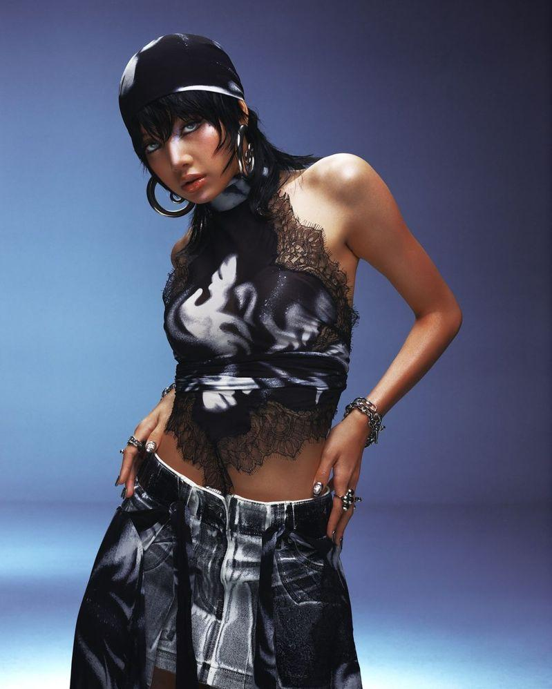
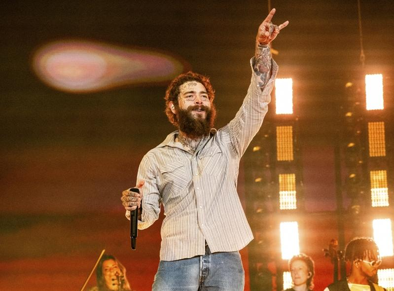
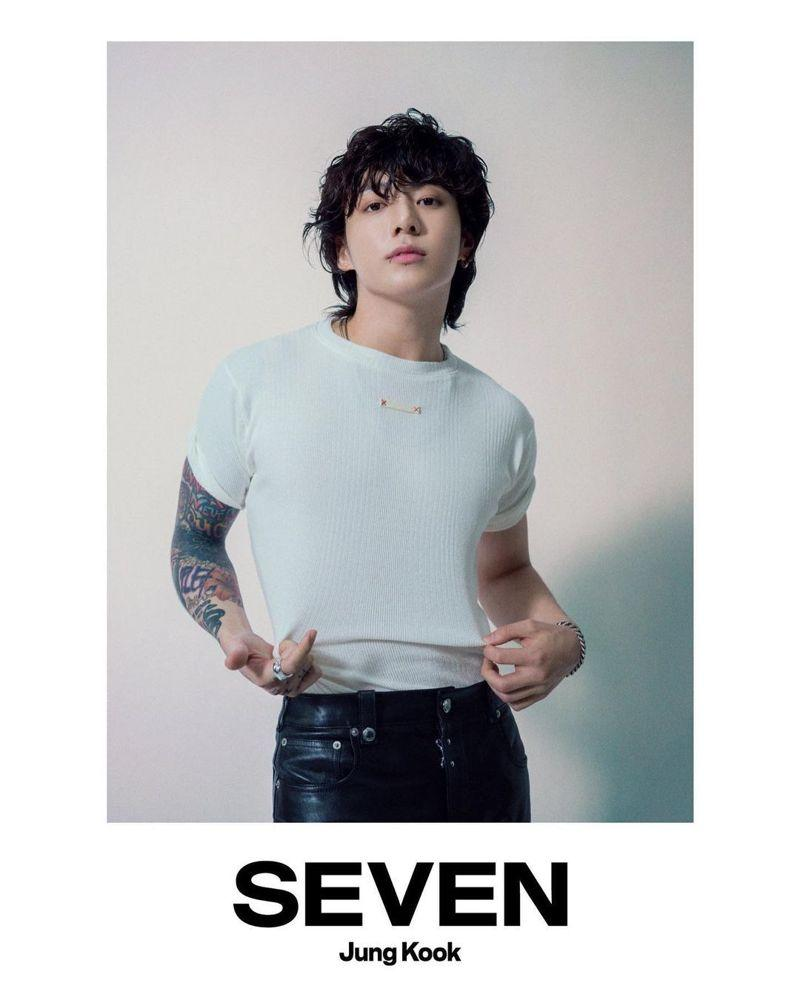
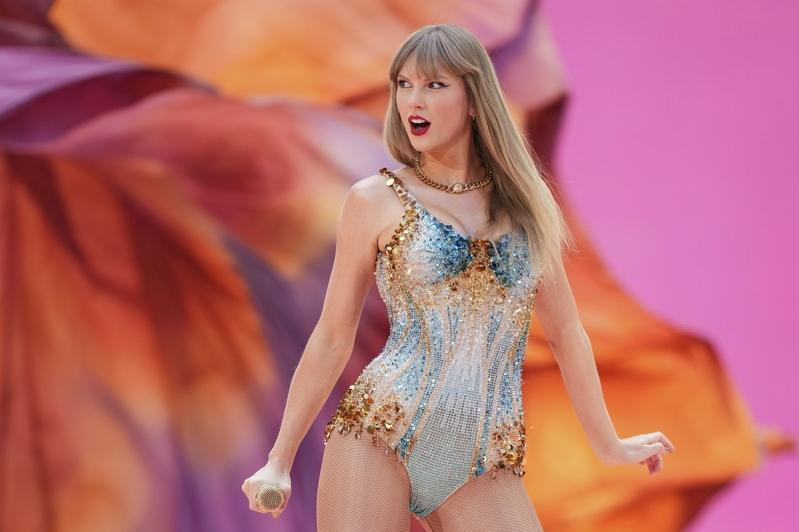
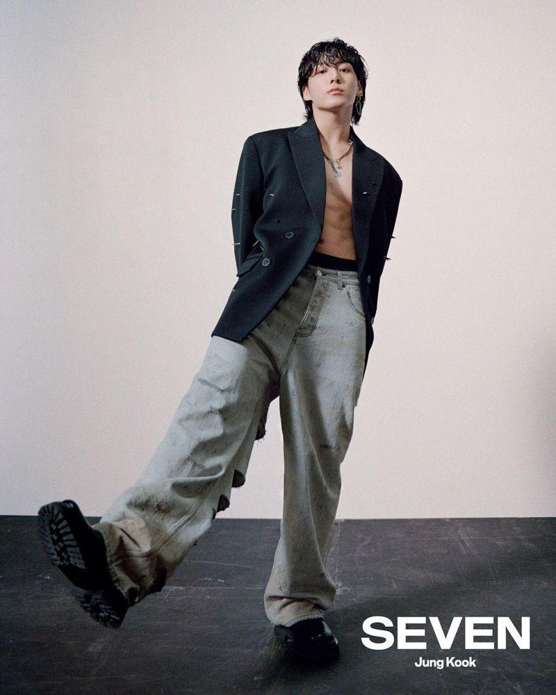

2024年MTV音乐录像带大奖公布提名名单，流行天后泰勒丝自从去年成为大赢家之后，今年则再度入围年度最佳音乐录像带、年度艺人等10项大奖，而她最近正在欧洲举办巡回演唱会，场场秒杀，是年度最风光歌手，BLACKPINK Lisa推出个人新曲「ROCKSTAR」也将问鼎4项大奖，证明即便单飞依旧超人气。
去年泰勒丝入围11项后，赢得9项大奖，「Anti-Hero」更4度拿下「年度最佳音乐录像带」，持续保持拿下最多次该项奖项的纪录，如果今年再拿奖，她将第5度抱回奖项，打破自己写下的傲人纪录，此外，泰勒丝目前已在该奖项拿下23座个人奖项，这次则有望打破碧昂丝共计30座奖的纪录，据悉，主办单位希望能邀请泰勒丝到场表演，但目前仍在洽谈中，而泰勒丝才刚结束波兰华沙的演唱会，欧洲巡演目前还有2站，她则发文表示非常期待能见到下一站维也纳的粉丝。
至于与泰勒丝合作新曲 「Fortnight」的串流霸主巨星马龙则以9项提名紧追在后，亚莉安娜、饶舌之神阿姆以及近期气势如虹的莎宾娜卡本特则分别以6项位居第三。
近年在欧美音乐界大有斩获的BTS防弹少年团、BLACKPINK，虽然团体并未发表新作，不过BTS成员柾国、BLACKPINK Lisa都有推出个人作品，Lisa晒黑皮肤、展现狂野造型的新曲「ROCKSTAR」推出以来获得不少好评，Lisa更一举入围「最佳K-POP」、「最佳编舞」等4项大奖，柾国则获得「最佳K-POP」等2项提名。MTV音乐录像大奖典礼预计将在9月10日于纽约举办。



